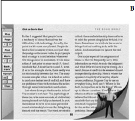

Situation: conclusions
Situation refers to the agent's situation within the interface and within society. The conclusion of this chapter states: Defining the virtual situation of an embodied agent can make users more comfortable with where the agent "lives," and provide affordances for how to access information and interact socially with the agent. Currently, designers focus on desktop and mobile applications and cross-platform compatibility between home computers and portable devices, but changing patterns of technology use will determine where agents are situated in the future. Designers should also take into consideration screenless interfaces and the applications of mixed realities such as VR and AR platforms.
